🌟 MEMPROMOSIKAN MAKANAN KHAS NTT SERTA BUDAYA YANG ADA DI NUSA TENGGARA TIMUR
Galeri media ini merupakan bagian dari upaya mempromosikan makanan khas Nusa Tenggara Timur sekaligus mendukung Budaya Di Nusa Tenggara Timur agar semakin dikenal oleh masyarakat luas : baik di tingkat nasional maupun internasional. Setiap foto, audio, dan video yang ditampilkan di sini memiliki cerita dan nilai budaya yang mendalam. Melalui galeri ini, kami ingin mengangkat kekayaan kuliner NTT yang selama ini belum banyak dikenal, padahal menyimpan cita rasa autentik yang luar biasa : mulai dari Jagung Bose yang gurih dan mengenyangkan, Se'i Sapi yang diasap dengan kayu kosambi selama berjam-jam, Kue Rambut yang renyah dan manis, hingga Kopi Timor yang telah mendunia. Semua hidangan ini bukan sekadar makanan, melainkan cerminan identitas, tradisi, dan kearifan lokal masyarakat Nusa Tenggara Timur yang diwariskan dari generasi ke generasi. Kami percaya bahwa kuliner NTT layak mendapatkan tempat istimewa di hati masyarakat Indonesia dan dunia.
Melalui galeri ini, kami ingin memperkenalkan bahwa Nusa Tenggara Timur memiliki beberapa budaya yang kaya dan beragam, yaitu Timor, Rote, Sabu, Flores, Sumba, dan Alor. Setiap budaya memiliki keunikan tersendiri : mulai dari makanan khas, bahasa daerah, hingga adat istiadat yang diwariskan turun-temurun. Budaya Timor dikenal dengan hidangan Se'i Sapi yang diasap dengan kayu kosambi, bahasa Dawan (Uab Meto), Tetun, dan Helong, serta tradisi Natoni berupa pantun lisan penyambutan tamu dan rumah adat Lopo berbentuk bulat. Budaya Rote memiliki Olak-Olak dan Kue Rambut sebagai kuliner khas, bahasa Rote (Dela) dengan dialek Dengka, Lole, dan Ringgou, serta tradisi menenun Tenun Ikat bermotif geometris dan upacara adat Ti'i Langga. Budaya Sabu menghadirkan Kue Lontar, Jaha Uwi, dan Tuak sebagai kuliner khas, bahasa Sabu (Haharu) yang erat kaitannya dengan bahasa Rote, serta ritual adat Hole untuk menyambut tamu dan memohon hujan, dengan rumah adat berbentuk limas. Budaya Flores sangat kaya dengan Ubi Nuabosi, Jagung Katemak, Kopi Bajawa, dan Kue Jawada, beragam bahasa seperti Lio, Ngada, Manggarai, Sikka, dan Ende, serta tradisi Tarian Caci, upacara Reba, dan rumah adat Mbaru Niang Wae Rebo yang ikonik. Budaya Sumba terkenal dengan Nasi Kolo, Keripik Pisang, dan Kaparak, bahasa Sumba (Kambera, Wewewa, Mamboru), serta tradisi Pasola (perang berkuda) dan rumah adat Uma Bokulu dengan kubur batu megalitik. Sedangkan budaya Alor menyajikan Jagung Goreng, Kue Rambut, dan Sopi, dengan lebih dari 12 bahasa daerah seperti Abui, Adang, Kolana, Kui, dan Sawila, serta tradisi Tarian Lego-Lego dan rumah adat Kolana berbentuk rumah panggung. Keenam budaya ini membuktikan bahwa Nusa Tenggara Timur adalah permata budaya yang menyimpan kekayaan luar biasa, di mana setiap suku memiliki makanan khas, bahasa, dan adat istiadat yang unik namun tetap terikat dalam satu identitas : Nusa Tenggara Timur.
Berikut penjelasan masing-masing budaya:
- 🍲 Kuliner Khas NTT : Menampilkan aneka makanan tradisional seperti Jagung Bose, Se'i Sapi, Kue Rambut, dan lainnya yang sarat akan cita rasa autentik.
- 🏪 UMKM Kulineran Kupang : Mendukung pelaku usaha mikro, kecil, dan menengah di Kupang agar produk mereka semakin dikenal dan dipasarkan lebih luas.
- 🎭 Budaya NTT : Memperkenalkan kekayaan budaya Nusa Tenggara Timur, mulai dari tenun ikat, rumah adat, suku adat, hingga tradisi lisan seperti Natoni.
- 📖 Filosofi & Tradisi : Setiap hidangan memiliki makna tersendiri yang diwariskan turun-temurun dari generasi ke generasi.
🏝️ FOTO BUDAYA NTT : KAIN ADAT, RUMAH ADAT & MAKANAN KHAS NTT
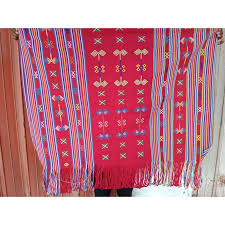
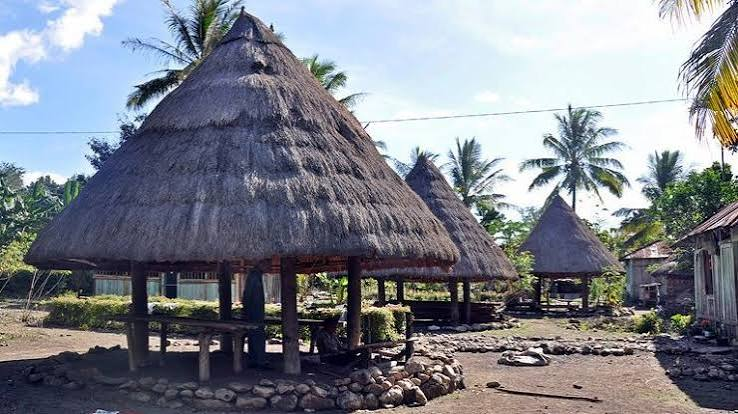
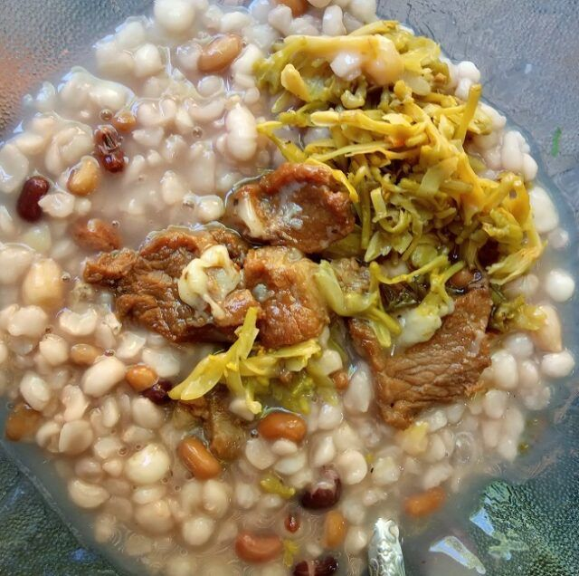
Budaya Timor : Masyarakat Timor mendiami Pulau Timor bagian barat, dengan Kota Kupang sebagai pusatnya. Makanan khas mereka antara lain Se'i Sapi (daging asap khas Timor), Jagung Bose (makanan pokok dari jagung dan kacang-kacangan), Rumpu-Rampe (tumis sayuran dari daun singkong dan bunga pepaya), serta Ikan Kuah Asam (ikan segar dengan kuah asam). Bahasa yang digunakan adalah Bahasa Dawan (Uab Meto), Bahasa Tetun, dan Bahasa Helong. Adat istiadat mereka sangat kental dengan tradisi Natoni (pantun lisan penyambutan tamu), rumah adat Lopo (rumah bulat beratap alang-alang), serta upacara adat seperti penyambutan tamu dan syukuran panen yang penuh makna.
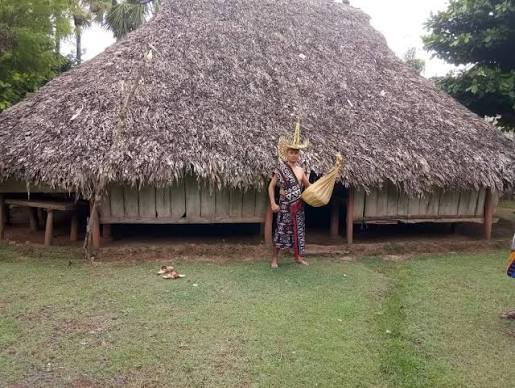
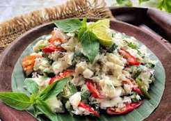
Budaya Rote : Masyarakat Rote mendiami Pulau Rote di ujung selatan NTT. Makanan khas mereka adalah Olak-Olak (kue dari tepung beras dan gula aren), Kue Rambut (kue tradisional renyah), serta Sopi (minuman fermentasi nira lontar). Bahasa yang digunakan adalah Bahasa Rote (Bahasa Dela) dengan beberapa dialek seperti Dengka, Lole, dan Ringgou. Adat istiadat mereka terkenal dengan tradisi menenun Tenun Ikat Rote dengan motif geometris khas, upacara adat Ti'i Langga (topi adat Rote), serta tradisi lisan yang kuat dan pertunjukan tari-tarian seperti Tari Bonet dan Tari Bini.
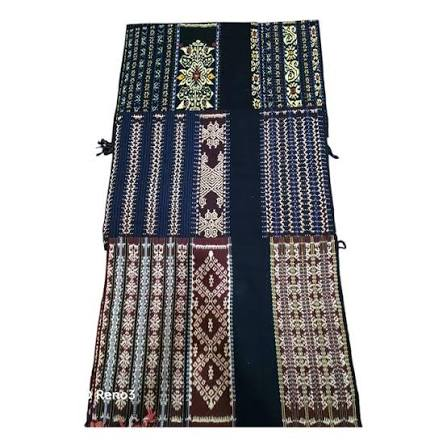
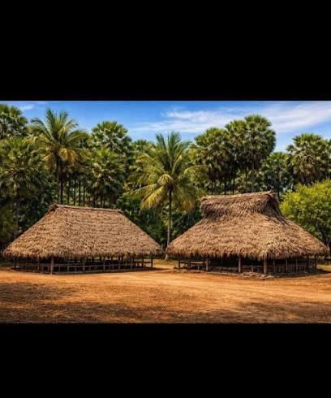
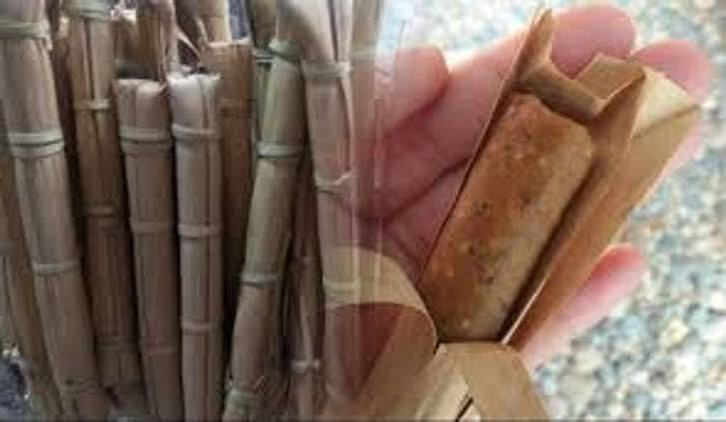
Budaya Sabu : Masyarakat Sabu mendiami Pulau Sabu Raijua di barat daya NTT. Makanan khas mereka antara lain Kue Lontar (kue dari tepung beras dengan gula), Jaha Uwi (ubi rebus dengan kelapa), serta Tuak (minuman fermentasi nira enau). Bahasa yang digunakan adalah Bahasa Sabu (Haharu) yang masih erat kaitannya dengan Bahasa Rote. Adat istiadat mereka sangat menghormati leluhur, dengan tradisi seperti Hole (upacara adat penyambutan tamu), penggunaan rumah adat berbentuk limas, serta ritual adat untuk memohon hujan dan hasil panen yang melimpah.
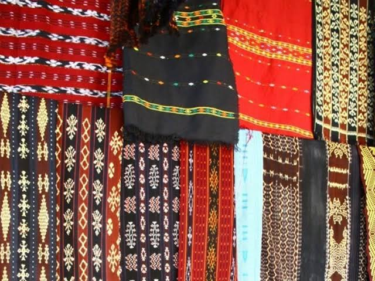
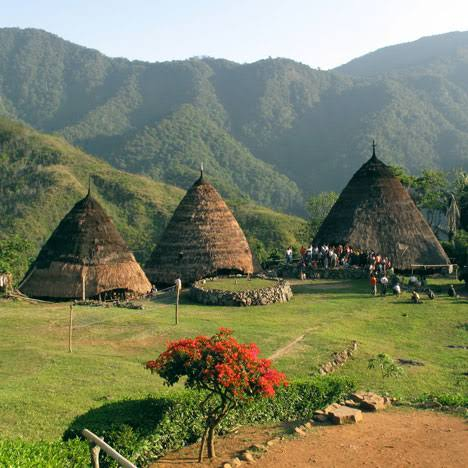
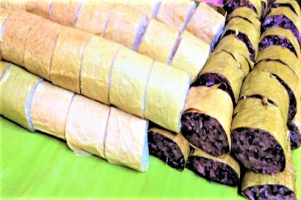
Budaya Flores : Flores adalah pulau panjang yang dihuni berbagai suku seperti Ende, Lio, Ngada, Manggarai, Sikka, dan Maumere. Makanan khas mereka sangat beragam, antara lain Ubi Nuabosi (ubi khas Ende), Jagung Katemak (jagung muda dengan santan), Kopi Flores Bajawa (kopi arabika khas dataran tinggi), serta Kue Jawada (kue tradisional dari tepung beras). Bahasa yang digunakan sangat beragam, seperti Bahasa Lio, Bahasa Ngada, Bahasa Manggarai, Bahasa Sikka, dan Bahasa Ende. Adat istiadat mereka sangat kental, dengan tradisi seperti Tarian Caci (tarian perang menggunakan cambuk), upacara adat Reba (syukuran tahun baru Ngada), rumah adat Mbaru Niang (rumah kerucut Wae Rebo), serta tradisi menenun Tenun Ikat Flores dengan motif yang kaya makna.
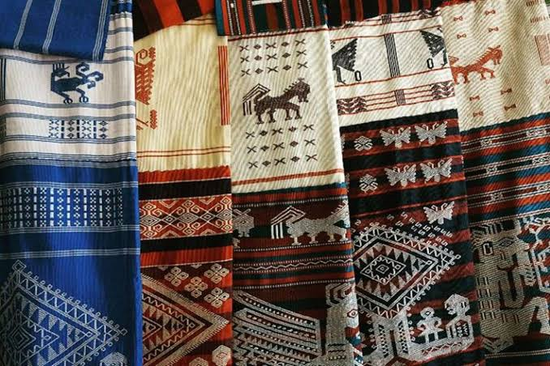
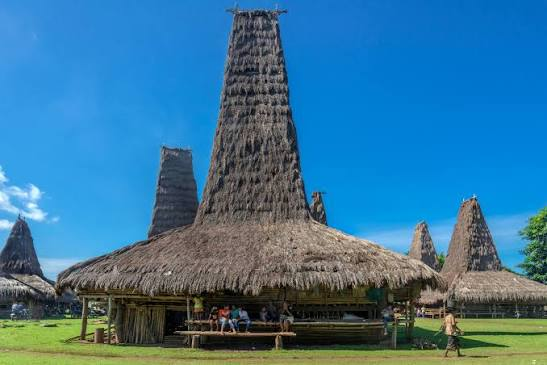
Budaya Sumba : Masyarakat Sumba mendiami Pulau Sumba di selatan NTT, dengan Sumba Barat dan Sumba Timur sebagai wilayah utamanya. Makanan khas mereka antara lain Nasi Kolo (nasi dalam bambu), Keripik Pisang, serta Kaparak (kue dari kacang hijau). Bahasa yang digunakan adalah Bahasa Sumba (Kambera, Wewewa, Mamboru, dan lainnya). Adat istiadat mereka terkenal sangat kuat, dengan tradisi Pasola (perang berkuda tradisional), rumah adat Uma Bokulu (rumah menara Sumba), kubur batu megalitik, serta tradisi menenun Tenun Ikat Sumba dengan motif kuda, ayam, dan manusia yang melambangkan keberanian dan kehormatan.
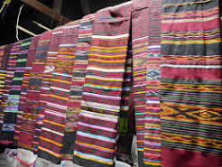
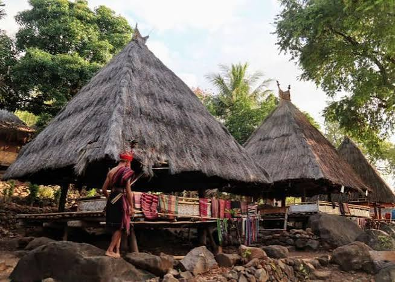
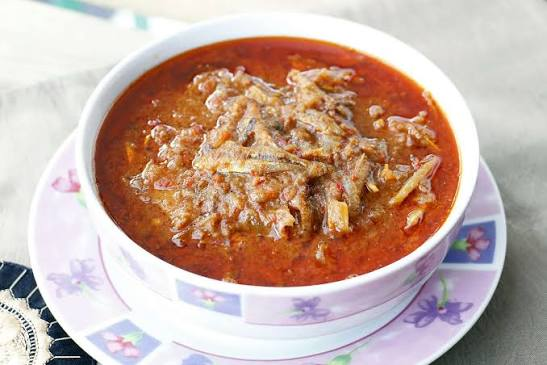
Budaya Alor : Masyarakat Alor mendiami Kepulauan Alor di ujung timur NTT. Makanan khas mereka antara lain Jagung Goreng (camilan gurih khas Alor), Kue Rambut (kue tradisional), serta Sopi (minuman fermentasi nira lontar). Bahasa yang digunakan sangat beragam, terdapat lebih dari 12 bahasa daerah di Alor, seperti Bahasa Abui, Bahasa Adang, Bahasa Kolana, Bahasa Kui, dan Bahasa Sawila. Adat istiadat mereka kaya akan tradisi seperti Tarian Lego-Lego (tarian persahabatan), upacara adat Kalabahi (syukuran hasil panen), rumah adat Kolana (rumah panggung Alor), serta tradisi menenun Tenun Ikat Alor dengan motif yang unik dan warna alami.
Dari keenam budaya tersebut, kita dapat melihat bahwa Nusa Tenggara Timur adalah permata budaya yang menyimpan kekayaan luar biasa. Setiap suku memiliki makanan khas, bahasa, dan adat istiadat yang unik : namun semuanya terikat dalam satu identitas: Nusa Tenggara Timur. Melalui galeri ini, kami ingin memperkenalkan keindahan dan keberagaman tersebut kepada masyarakat luas, sekaligus mengajak semua pihak untuk ikut melestarikan warisan budaya yang tak ternilai ini.
📷 FOTO KULINER UMKM & BUDAYA UMKM NUSA TENGGARA TIMUR
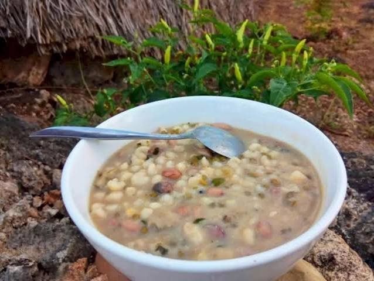
Jagung Bose
Makanan pokok khas NTT dari jagung, kacang tanah, kacang hijau, dan labu. Melambangkan kebersamaan dan rasa syukur.

Se'i Sapi
Daging sapi asap khas Timor yang diasap dengan kayu kosambi. Ikon kuliner NTT yang paling terkenal.
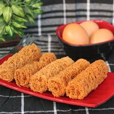
Kue Rambut
Kue tradisional berbentuk halus seperti rambut, terbuat dari tepung beras. Renyah dan manis.
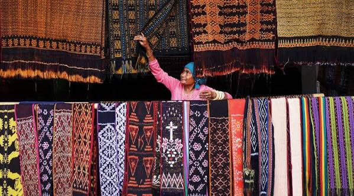
Tenun Ikat
Kain tenun motif khas NTT dengan filosofi mendalam. Setiap motif memiliki makna tersendiri.
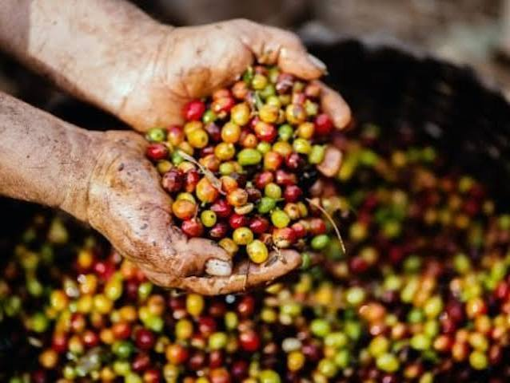
Kopi Timor
Kopi arabika asal Timor dengan cita rasa khas, sedikit asam, dan aroma kuat. Komoditas ekspor unggulan NTT.
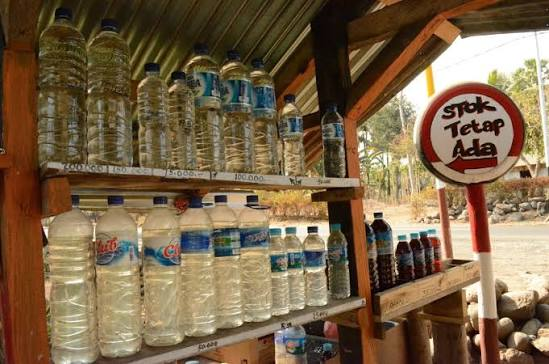
Sopi Timor
Minuman tradisional hasil fermentasi nira lontar. Bagian dari identitas budaya masyarakat Timor.
Rumah Adat TTS
Arsitektur megalitik khas Timor Tengah Selatan. Simbol kekayaan budaya & tradisi leluhur NTT.
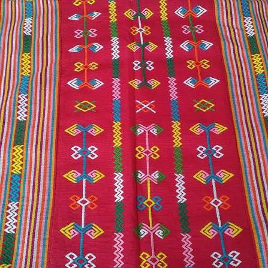
Suku Boti
Masyarakat adat TTS yang masih menjaga tradisi leluhur, termasuk kuliner dan ritual adatnya.
🎬 VIDEO DOKUMENTER KULINERAN & BUDAYA NTT
🎥 Video Kulineran & Budaya NTT
Dokumentasi singkat tentang kekayaan kuliner NTT (Jagung Bose, Se'i Sapi, Kue Rambut, Kopi Timor DLL)
🎧 AUDIO MAKANAN KHAS NTT DAN BUDAYA NUSA TENGGARA TIMUR
🎙️ Audio Penjelasan Kulineran & Budaya NTT
Penjelasan singkat tentang kekayaan kuliner NTT (Jagung Bose, Se'i Sapi, Kue Rambut, Kopi Timor) dan budaya NTT (Timor, Rote, Sabu, Flores, Sumba, Alor) yang perlu dikenal dan dilestarikan.